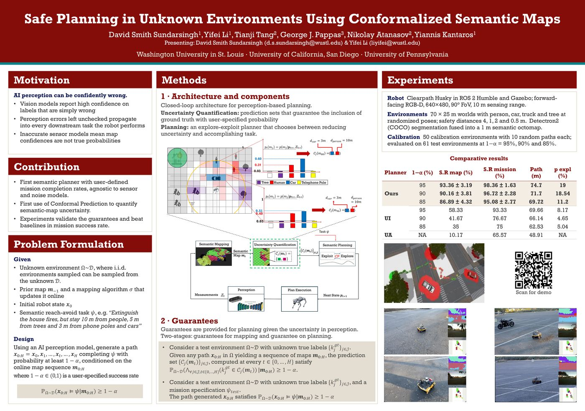

Safe Planning in Unknown Environments Using Conformalized Semantic Maps
TL;DR
We plan semantic reach-avoid missions in unknown environments so that the robot meets a user-chosen success rate 1−α, even when perception is wrong—without assuming a sensor or noise model.
Key contributions
- First semantic planner with user-defined mission completion rates, agnostic to sensor and noise models.
- First use of Conformal Prediction to quantify semantic-map uncertainty in a model- and distribution-free way.
- Experiments validate the guarantees and show higher mission success rates than uncertainty-informed and uncertainty-agnostic baselines.
Abstract
This paper addresses semantic planning problems in unknown environments under perceptual uncertainty. The environment contains multiple unknown semantically labeled regions or objects, and the robot must reach desired locations while maintaining class-dependent distances from them. We aim to compute robot paths that complete such semantic reach-avoid tasks with user-defined probability despite uncertain perception. Existing planning algorithms either ignore perceptual uncertainty—thus lacking correctness guarantees—or assume known sensor models and noise characteristics. In contrast, we present the first planner for semantic reach-avoid tasks that achieves user-specified mission completion rates without requiring any knowledge of sensor models or noise. This is enabled by quantifying uncertainty in semantic maps—constructed on-the-fly from perceptual measurements—using conformal prediction in a model- and distribution-free manner. We validate our approach and the theoretical mission completion rates through extensive experiments, showing that it consistently outperforms baselines in mission success rates.
Motivation
AI perception can be confidently wrong: vision models often report high confidence on incorrect labels. Left unchecked, those errors propagate into every downstream robotic task. Map confidences from inaccurate sensor models are also not true probabilities. Prior semantic planners either treat perception as ground truth (no correctness guarantees) or assume known sensor/noise models. We instead calibrate semantic-map uncertainty with conformal prediction and plan against the resulting prediction sets, so mission success tracks a user-specified rate 1−&alpha.
Method Overview
Online perceptual measurements build a semantic map. Conformal prediction wraps each map cell in a prediction set that contains the ground-truth label with probability at least 1−&alpha. An explore–exploit planner then either follows a conservative path on those sets (exploit) or gathers more observations to shrink uncertain cells (explore) until a feasible safe path exists.


Why Conformalized Maps Help
Under partial occlusion, a standard map may confidently label a person as a tree. Treating that label as truth can violate a stricter person safety distance. Our prediction sets keep multiple plausible labels (e.g., tree, human, and free space), so the planner takes a conservative path and preserves safety.

Results
Experiments use a Clearpath Husky in Gazebo (ROS 2 Humble) with a forward-facing RGB-D camera (640×480, 90° FoV, 10 m range) in 70×25 m worlds with person, car, truck, and tree objects (safety distances 4, 1, 2, and 0.5 m). Detectron2 (COCO) segmentations are fused into a 1 m semantic octomap. We calibrate on 50 environments (10 random paths each) and evaluate on 61 test environments at 1−&alpha ∈ {95%, 90%, 85%}. Baselines: uncertainty-informed (UI; heuristic prediction sets from uncalibrated PMFs) and uncertainty-agnostic (UA; most-likely labels only).
| Planner | 1−α (%) | S.R.map (%) | S.R.mission (%) | Path (m) | pexpl (%) |
|---|---|---|---|---|---|
| Ours | 95 | 93.36 ± 3.19 | 98.36 ± 1.63 | 74.7 | 19 |
| 90 | 90.16 ± 3.81 | 96.72 ± 2.28 | 71.7 | 18.54 | |
| 85 | 86.89 ± 4.32 | 95.08 ± 2.77 | 69.72 | 11.2 | |
| UI | 95 | 58.33 | 93.33 | 69.66 | 8.17 |
| 90 | 41.67 | 76.67 | 66.14 | 4.65 | |
| 85 | 35 | 75 | 62.53 | 5.04 | |
| UA | NA | 10.17 | 65.57 | 48.91 | NA |

Poster
Conference poster summarizing motivation, method, guarantees, and experiments. Click to enlarge.

BibTeX
@article{Sundarsingh2026SafePlanning,
title={Safe Planning in Unknown Environments Using Conformalized Semantic Maps},
author={Sundarsingh, David Smith and Li, Yifei and Tang, Tianji and Pappas, George J. and Atanasov, Nikolay and Kantaros, Yiannis},
journal={IEEE Robotics and Automation Letters},
year={2026},
doi={10.1109/LRA.2026.3668466},
url={https://doi.org/10.1109/LRA.2026.3668466}
}